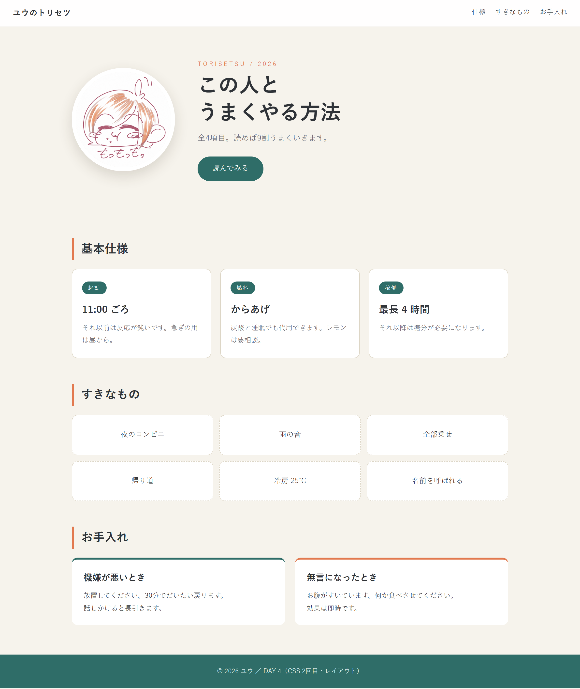
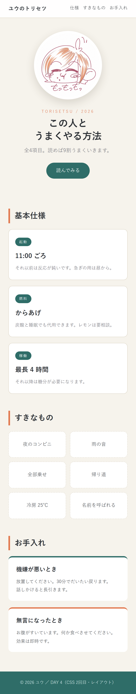

04
D A Y 4 / L A Y O U T
並べる、
動かす
縦に積まれるだけだった箱を、横に並べる。
スマホ対応と、ちょっとした動きも今日で。
第4回 ／ Flexbox・Grid・position・変数・transition・レスポンシブ

横に並ばないの、
ずっと不思議だった。
ずっと不思議だった。
今日のゴール
こういうページが作れる
day4/index.html

- 上に固定されるナビゲーション
- 写真と文が横並びのヒーロー
- カードが3枚ならぶ
- タイルがきれいに敷き詰まる
- マウスを乗せるとふわっと浮く
- スマホでは自動で縦並びになる
HTMLは DAY 2 のまま
今日も中身は変えない。CSSだけでここまで行く。
見た目が急に良くなるので、たぶん一番テンションが上がる回。
おさらい
なぜ勝手に横に並ばないのか
ブロック要素は横幅いっぱいを取るから。 となりに入る隙間がない。
そのまま
起動
燃料
稼働
親に1行足すだけで解決する。
flex を付けた
起動
燃料
稼働
ここだけは丸暗記でいい
指定するのは「並べたい箱」ではなく「その親」。
理屈は後で分かるので、いまは形で覚えてしまって。
理屈は後で分かるので、いまは形で覚えてしまって。
レイアウト ①
Flexbox ── 一列に並べる
| justify-content | 横方向の並べ方 |
|---|---|
| flex-start | 左に寄せる（初期値） |
| center | 中央 |
| flex-end | 右に寄せる |
| space-between | 両端に寄せて、間を均等に |
| space-around | まわりに均等な余白 |
| align-items | 縦方向の並べ方 |
|---|---|
| stretch | 高さをそろえる（初期値） |
| center | 縦の中央。よく使う |
| flex-start | 上ぞろえ |
| flex-end | 下ぞろえ |
覚え方
justify ＝ 主軸（横）／align ＝ 交差軸（縦）。
flex-direction: column にすると、この2つが入れ替わる。
flex-direction: column にすると、この2つが入れ替わる。
gap は神
昔は margin で1つずつ調整していた。今は親に gap を書くだけ。
最後の要素に余分な余白が付かないのも嬉しい点。
レイアウト ②
flex: 1 ── 余った幅を分け合う
flex: 1
1
2
3
flex: none と flex: 1
こちらが伸びる
2つだけ覚える
flex: 1 ＝ 余りをもらって伸びる
flex: none ＝ 絶対に縮まない（画像やボタンに）
flex: none ＝ 絶対に縮まない（画像やボタンに）
レイアウト ③
Grid ── 格子に敷き詰める
1fr ＝ 余った幅の1つぶん。 repeat(3, 1fr) は「1fr を3回」＝3等分。
3列のGrid
A
B
C
D
E
F
| 書き方 | 意味 |
|---|---|
| 1fr 1fr | 2等分 |
| 2fr 1fr | 左が2倍の幅 |
| 200px 1fr | 左は固定、右は残り全部 |
| repeat(4, 1fr) | 4等分 |
Flex と Grid の使い分け
1列に並べる → Flex／格子に並べる → Grid。
迷ったら Flex から。
中央寄せの定番
display: grid; place-items: center; だけでタテヨコ完全に中央。
読みやすさの秘密
中身の幅を決めて、中央に置く
大きい画面で文章が横に伸びきると、途端に読みにくくなる。 プロのサイトはほぼ全部これをやっている。
width ではなく max-width
width: 940px だと、スマホでも 940px のままはみ出す。
max-width なら「940px までは広がるが、狭い画面ではそれに合わせる」。
max-width なし
この人と仲良くするための説明書。取り扱いには十分ご注意ください。お腹がすくと無言になる。そういうときは何か食べさせて。だいたい直る。
max-width あり
この人と仲良くするための説明書。取り扱いには十分ご注意ください。お腹がすくと無言になる。
1行が長すぎると、目が次の行を見失う。
レイアウト ④
position ── 流れから外す
| 値 | 動き | 使いどころ |
|---|---|---|
| static | ふつう（初期値） | いつもの状態 |
| relative | 元の位置を基準に少しずらす | 微調整／absolute の基準にする |
| absolute | 流れから完全に外れ、親を基準に配置 | バッジ、右上の×ボタン、重ねる装飾 |
| fixed | 画面に貼りつく（スクロールしても動かない） | 「上に戻る」ボタン、チャット窓 |
| sticky | スクロールして端まで来たらそこで止まる | 上に残るナビ。今日これを使う |
z-index が効かない？
z-index は position が static 以外のときだけ効く。
「重なり順が変えられない」ときは、まず position が付いているか確認。
色を1か所にまとめる
CSS変数 ── 使い回せる値
- 名前は必ず -- で始める
- 使うときは var(--名前)
- :root ＝ ページ全体。ここに書けばどこでも使える
何が嬉しいのか
「やっぱりアクセント色を変えたい」となったとき、1か所直せば全部変わる。
変数を使わないと、30か所を手作業で探すことになる。
ダークモードもこれで作れる
body.dark のときだけ変数を上書きすれば、
他のCSSを1行も触らずに配色が入れ替わる。DAY 5 の実習でやる。
動き ①
マウスを乗せたら反応する
| transform の値 | 動き |
|---|---|
| translateY(-5px) | 上に5px動かす |
| scale(1.05) | 1.05倍に拡大 |
| rotate(3deg) | 3度かたむける |
transition は「元の状態」に書く
:hover のほうに書くと、戻るときだけ一瞬になる。
普段の状態に書くのが正解。
0.15〜0.25秒がちょうどいい
速すぎると気づかない、遅いとイライラする。
迷ったら 0.2s。
迷ったら 0.2s。
やりすぎ注意
全部の要素が動くページは目が疲れる。
最初はだいたい付けすぎる。あとで半分に減らすくらいでちょうどいい。
動き ②
勝手に動かす ── keyframes
hover と違って、何もしなくても動き続けるアニメーション。 「振動」「点滅」「ふわふわ」などに使う。
| 指定 | 意味 |
|---|---|
| bob | @keyframes で付けた名前 |
| 1.4s | 1周にかかる時間 |
| ease-in-out | 速度の変化のしかた |
| infinite | ずっと繰り返す |
0% と 100% を同じにすると
ループしてもつなぎ目が見えない。ゆらゆらさせたいときの定番。
最終課題で使う
手札のカードがマウスでふわっと浮くのも、これ。
スマホ対応
画面の広さで書き分ける
① まず head におまじない
これが無いと、スマホがPC画面を丸ごと縮小して表示する（文字が読めない）。
② 狭いときだけのCSSを書く
スマホ幅

同じCSSファイル。横並びが自動で縦並びに。
考え方
やることは、ほぼ3つだけ
① 横並びを縦にする
狭い画面に3枚は入らない。素直に縦に積む。
② 列を減らす
Grid は3列→2列へ。1列まで減らす必要はないことが多い。
③ 文字と余白を小さく
PCで 42px の見出しは、スマホでは大きすぎる。
確認のしかた
F12 → 左上のスマホのアイコンをクリック。
画面サイズを自由に変えて確認できる。実機がなくてもOK。
ブラウザの窓をつまんで動かすだけでもいい
窓の右端をドラッグして細くしていくと、
どこで崩れるかが一目で分かる。
C H A P T E R / 0 2
実習：レイアウトを組む
見本は practice/day4。
まずは Flexbox だけで、カード3枚を横に並べてみよう。

実習
小さく1つずつ
- day4 フォルダを作り、DAY 3 のファイルをコピー
- head に viewport の meta を追加
- CSSの先頭に :root で色の変数を書く
- .wrap を作って max-width と margin: 0 auto
- カード3枚を display: flex で横並びに
- :hover でふわっと浮かせる
- 最後に @media でスマホ対応
順番が大事
レイアウト → 装飾 → 動き の順。
先にアニメーションを付けると、レイアウトを直すたびに壊れる。
崩れたら F12
要素を右クリック →「検証」。Flexコンテナには小さなバッジが出るので、
クリックすると並び方が図で見える。
完璧を目指さない
1px ずれていても誰も気づかない。「だいたい整っている」で先に進むのがコツ。
持ち帰り用
DAY 4 のプロパティ
| Flexbox | |
|---|---|
| display: flex | 横に並べる |
| flex-direction | row / column |
| gap | 間の余白 |
| justify-content | 横方向の配置 |
| align-items | 縦方向の配置 |
| flex-wrap | 入りきらないとき折り返す |
| flex: 1 | 余りをもらって伸びる |
| flex: none | 縮まない |
| Grid・幅 | |
|---|---|
| display: grid | 格子に並べる |
| grid-template-columns | 列の分け方 |
| place-items: center | タテヨコ中央 |
| max-width | これ以上広げない |
| margin: 0 auto | 中央寄せ |
| position | |
| relative | 基準にする |
| absolute | 流れから外す |
| sticky | 端で止まる |
| z-index | 重なり順 |
| 動き・変数 | |
|---|---|
| transition | 変化にかける時間 |
| transform | 動かす・回す・拡大 |
| :hover | マウスが乗ったとき |
| @keyframes | アニメーション定義 |
| animation | アニメーション適用 |
| --名前 / var() | CSS変数 |
| レスポンシブ | |
| @media | 画面幅で書き分け |
| meta viewport | スマホ用のおまじない |
DAY 4 おわり
チェックリスト
- display: flex を親に書く、と説明できる
- カードを3枚、横に等分で並べられる
- max-width と margin: 0 auto で中央に置ける
- hover でふわっと動かせる
- @media でスマホのとき縦並びにできる
次回 DAY 5 ／ ついに JavaScript
HTML・CSS は「置く」だけだった。次からは
押したら変わるページを作る。ここからが本当のプログラミング。
宿題（15分）
playground/css-lab.html で Flexbox のボタンを全部押してみる。
exercises.html の問9〜11も解く。
exercises.html の問9〜11も解く。